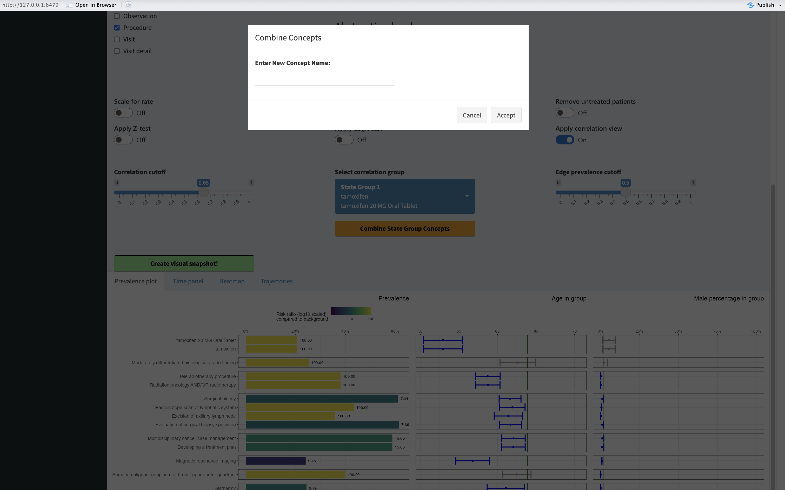

Graphical user interface
a02_interface.RmdIntroduction
If you have successfully executed the study on your target cohort you can explore the results inside the graphical user interface!
################################################################################
#
# Run the interface
#
#################################################################################
CohortContrast::runCohortContrastGUI(pathToResults = getwd())In this example we have two studies in our pathToResults
designated folder.

First view of the GUI
To activate a study, you must click on it’s name. Let’s activate the breast cancer study view.
Selected study
Mapping
You may want to map some concepts together. The ‘Correlation view’ toggle helps you to find concept groups which are highly correlated.
- Concepts might be highly correlated because they have a very similar meaning (eg metoclopramide as ingredient and as a drug)
- Concepts might be highly correlated because they are part of the same treatment arm (eg diagnostic biopsy and evaluation of the biopsy)
Correlated groups’ heatmap
Changing the correlation threshold slider will cluster together groups of concepts (in all plots) which have internal correlation of atleast the threshold. Then you can select a group and combine it.
 In this example we combine the tamoxifen derivatives. You can select any name, but a unique one is advised.
Selection of the group
You can manually do the same thing under the ‘Mapping’ tab. Search for concepts you want to combine and click on them to be selected, then press ‘Combine Selected’.
Combining manually
You can always press the ‘Reset’ button to undo your changes. When creating the ‘Snapshot’ the mappings are also as a table as well as all the underlying data.